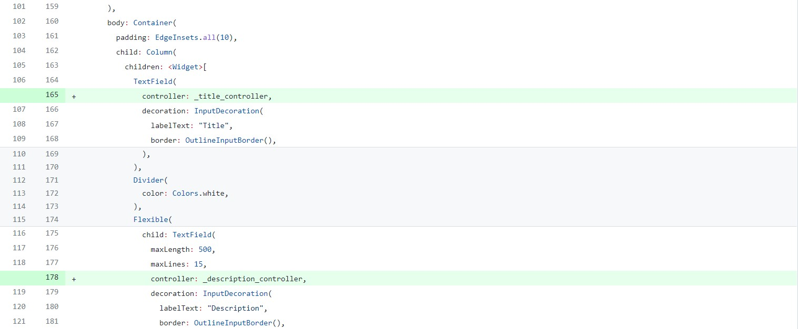

Codelab4: Notepad备忘录
初始化应用
创建一个简单的、基于模板的 Flutter 工程，将项目命名为 notepad ，接下来你将会修改这个工程来完成最终的 App。
下面这个 GIF 可以引导你预览本 codelab 做完之后的应用效果图：

在这个步骤中，你将主要编辑 Dart 代码所在的 lib/main.dart 文件：
删除 lib/main.dart 中的所有代码，然后替换为下面的代码，运行代码将显示一个标题为 Notepad 的空白页面。
import 'package:flutter/material.dart';
void main() => runApp(MyApp());
class MyApp extends StatelessWidget {
@override
Widget build(BuildContext context) {
return MaterialApp(
title: 'Welcome to Flutter',
home: NotepadPage()
);
}
}
class NotepadPage extends StatefulWidget {
@override
State createState() => NotepadState();
}
class NotepadState extends State {
@override
Widget build(BuildContext context) {
return Scaffold(
appBar: AppBar(
title: Text("Notepad"),
),
);
}
}
设置备忘列表页面
在这一步，将设置一个以列表的形式展示备忘的页面，并添加长按删除的功能。
展示备忘列表
定义一个 Todo 类，表示一条备忘，其中包含备忘的标题和内容描述，在全局定义：
class Todo {
String title;
String description;
Todo(this.title, this.description);
}
自动生成5条备忘内容，在 NotepadState 类中定义列表 _todos ：
List _todos = List.generate(
5,
(index) => Todo(
"Todo $index",
"A description of what needs to be done for Todo $index"
)
);
构建一个显示列表的页面，将备忘展示在页面中，修改 NotepadState 类中的 build 函数，在 Scaffold 组件中添加参数 body ：
body: Container(
padding: EdgeInsets.all(10),
child: ListView.builder(
itemCount: _todos.length,
itemBuilder: (context, index) {
return ListTile(
title: Text(_todos[index].title),
subtitle: Text(
_todos[index].description,
overflow: TextOverflow.ellipsis,
maxLines: 1,
),
);
},
),
),
删除备忘
为列表的每一项添加长按删除的功能，构造列表项的长按触发函数，弹出对话框询问是否确认删除，修改 NotepadState 类中的 build 函数，在 ListTile 组件中添加参数 onLongPress ：
onLongPress: () => showDialog(
context: context,
builder: (BuildContext context) => AlertDialog(
title: Text("Delete?"),
actions: [
TextButton(
child: Text("Cancel"),
onPressed: () => Navigator.pop(context, "Cancel"),
),
TextButton(
child: Text("Confirm"),
onPressed: () {
setState(() {
_todos.removeAt(index);
Navigator.pop(context, "Confirm");
});
},
)
],
)
)
添加新增备忘功能
在这一步中，将添加一个悬浮按钮，点击该按钮可跳转到新建备忘页面，在新页面点击确认按钮，返回备忘列表页面，并添加新建的备忘。
设置备忘修改页面
新建页面，用于输入新建备忘的标题和内容描述，在全局定义 DetailPage 类和 DetailState 类：
class DetailPage extends StatefulWidget {
@override
State createState() => DetailState();
}
class DetailState extends State {
@override
Widget build(BuildContext context) {
return Scaffold(
appBar: AppBar(
title: Text("Detail"),
),
);
}
}
修改新页面，分别添加用于输入标题和备忘描述的两个文本框，修改 DetailState 类中的 build 函数，在 Scaffold 组件中添加参数 body ：
body: Container(
padding: EdgeInsets.all(10),
child: Column(
children: [
TextField(
decoration: InputDecoration(
labelText: "Title",
border: OutlineInputBorder(),
),
),
Divider(
color: Colors.white,
),
Flexible(
child: TextField(
maxLength: 500,
maxLines: 15,
decoration: InputDecoration(
labelText: "Description",
border: OutlineInputBorder(),
),
),
)
],
),
),
实现新建备忘交互
添加点击主页面悬浮按钮跳转到新页面，并接收返回参数新增备忘的功能，修改 NotepadState 类中的 build 函数，在 FloatingActionButton 组件中修改参数 onPressed ：
onPressed: () {
Navigator.push(
context,
MaterialPageRoute(
builder: (context) => DetailPage(),
settings: RouteSettings(
arguments: {
"index": _todos.length,
"todo": Todo("", ""),
}
)
)
).then((value) {
setState(() {
if (value["todo"].title != "") {
_todos.add(value["todo"] as Todo);
} else if (value["todo"].description != "") {
Todo _todox = value["todo"] as Todo;
_todox.title = _todox.description.split(" ")[0];
_todos.add(_todox);
}
});
});
},
在新页面中添加参数，分别为储存备忘内容的参数 _todo 、两个文本框控制柄 _title_controller 和 _description_controller 以及索引 index ，在 DetailState 类中定义上述参数：
late Todo _todo;
late TextEditingController _title_controller, _description_controller;
late int index;
在新页面中重定义构造函数和析构函数，在 DetailState 添加函数：
@override
void initState() {
// TODO: implement initState
super.initState();
_title_controller = TextEditingController();
_description_controller = TextEditingController();
}
@override
void dispose() {
// TODO: implement dispose
_title_controller.dispose();
_description_controller.dispose();
super.dispose();
}
分别将两个文本框控制柄绑定到两个文本框，修改 DetailState 类中的 builde 函数：
使用主页面的传参初始化新页面，修改 DetailState 类中的 build 函数，在函数中定义以下变量：
Map args = ModalRoute.of(context)!.settings.arguments as Map;
_todo = args["todo"];
index = args["index"];
_title_controller.text = _todo.title;
_description_controller.text = _todo.description;
在新页面添加标题栏按钮，实现点击该按钮返回主页面，并将文本框中输入的内容传回主页面的功能，修改 DetailState 类中的 build 函数，在 AppBar 组件中添加参数 actions ：
actions: [
IconButton(
onPressed: () {
_todo.title = _title_controller.text;
_todo.description = _description_controller.text;
Navigator.of(context).pop({
"index": index,
"todo": _todo
});
},
icon: Icon(Icons.check)
)
],
添加修改备忘功能
为主页面列表中的备忘添加功能，点击该备忘，跳转到修改页面，并接收修改后的备忘内容，重新展示备忘，修改 NotepadState 类中的 build 函数，在 ListTile 组件中添加 onTap 参数：
onTap: () {
Navigator.push(
context,
MaterialPageRoute(
builder: (context) => DetailPage(),
settings: RouteSettings(
arguments: {
"index": index,
"todo": _todos[index],
}
)
)
).then((value) {
setState(() {
if (value["todo"].title != "") {
_todos[value["index"]] = (value["todo"] as Todo);
} else if (value["todo"].description != "") {
Todo _todox = value["todo"];
_todox.title = _todox.description.split(" ")[0];
_todos[value["index"]] = _todox;
}
});
});
},